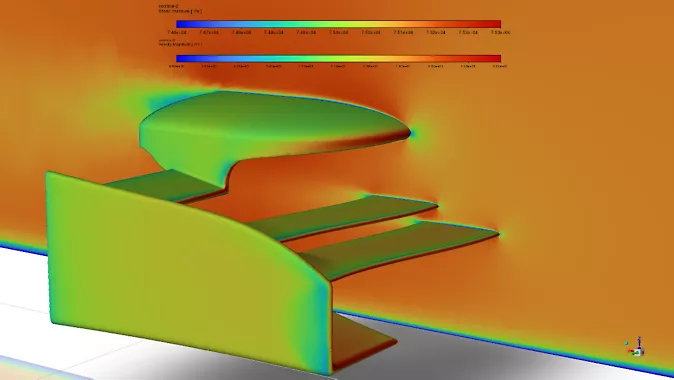
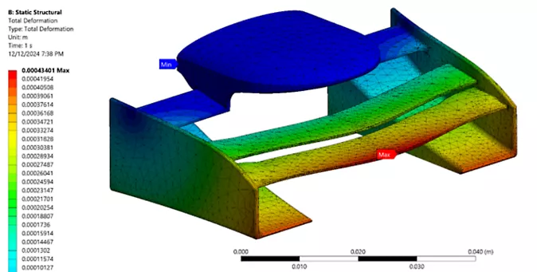
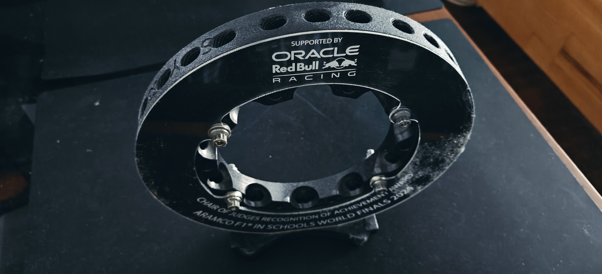
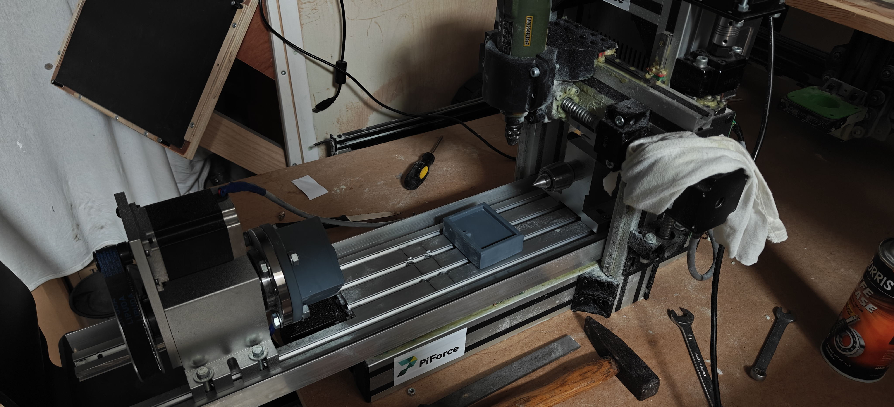

Overview
PiForce was a 5-member national champion team representing Greece at the Aramco F1 in Schools World Finals 2024 in Dammam, Saudi Arabia. The competition challenges students to design, manufacture, and race miniature CO2-powered Formula One cars. We won the Oracle Red Bull Racing Chair of Judges Recognition of Achievement Award.
Engineering
- Aerodynamic Design: Engineered aerodynamic surfaces through CFD (Ansys Fluent) and wind-tunnel testing, achieving a 17% drag reduction over the baseline design. CFD results closely aligned with wind tunnel data, confirming simulation accuracy.
- Structural Analysis: Used Ansys Mechanical FEA to simulate front wing behavior during impact and ensure CNC machine components could withstand operational stress.
- Custom 4-Axis CNC: Designed and built a custom 4-axis CNC machine for precision manufacturing of the car body.
- Scientific Simulator: Developed a full-scale scientific simulator for virtual testing and data acquisition, integrating MATLAB-based motion prediction and control optimization.
- Custom Software: Integrated Fluent CFD results into custom performance analysis software for holistic design evaluation and data-driven decision-making.
Results
- Reduced design cycle times by approximately 40%
- Estimated 12% increase in overall aerodynamic efficiency
- Secured €24,000+ in sponsorships (PWC, Hellenic Petroleum Energy, Ansys)
- Featured as an official Ansys case study
- 1st Place, F1 in Schools Greek Champions (Oct 2023)
- Oracle Red Bull Racing Achievement Award at World Finals (Nov 2024)